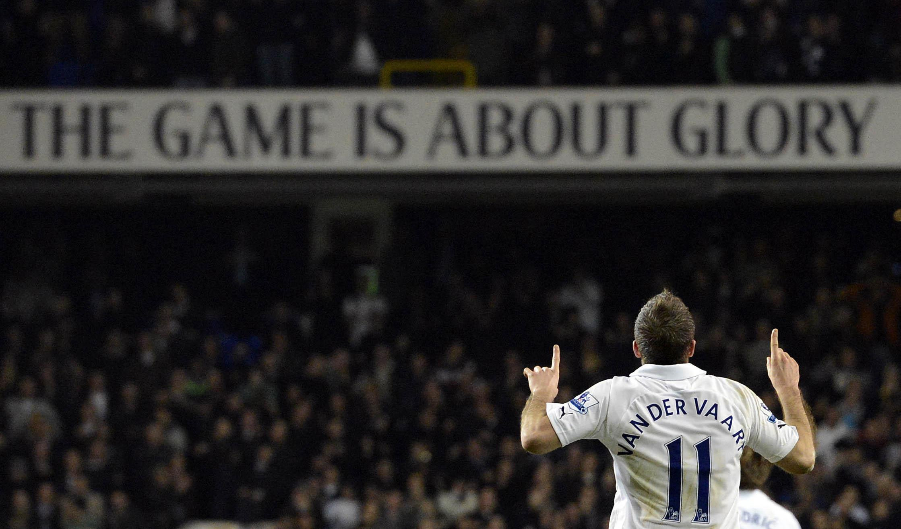
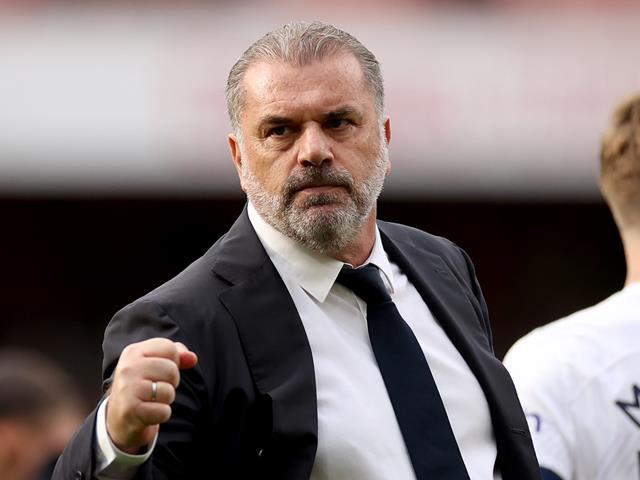
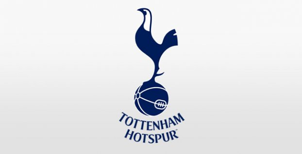
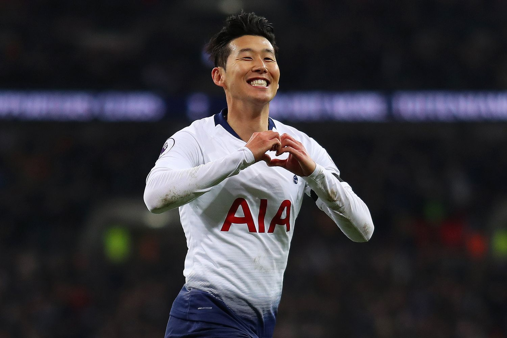

<!DOCTYPE html>
<html lang="pl-PL>
<head>

<meta http-equiv="Content-type" content="text/html; charset=UTF-8" />
<meta http-equiv="Content-Language" content="pl" />
<meta name="Author" content="Aleksander Żuk" />
<title>Piłka nożna okiem amatora</title>
<link rel="stylesheet" href="../css/style.css"/>
</head>


<body style="background-color:lightgray;">

<div id = menu>
<table>
<tr>
<th> <a href ="../index.html"> Menu </th>
<th> <a href ="Na2Nozke.html"> Na2Nóżkę </th>
<th> <a href ="PremierLeague.html"> Premier League </th>
<th> <a href ="MlodePerelki.html"> Mlode Perelki </th>
<th> <a href ="oMnie.html"> O mnie </th>
<th> <a href ="kontakt.html"> Kontakt </th>
</tr>
</table>
</div>

<h1> <i>Premier League</i> </h1>
<hr>
<h2 style="padding-bottom:40px;"> Jej wysokość, królowa wszystkich lig i najpopularniejsza na świecie. Premier League jest moją ulubioną ligą i można powiedzieć, że pasją.
</h2>


<p> Na codzień jestem kibicem Tottenhamu Hotspur. Jest to zdecydowanie mój ulubiony klub w tej lidze i mam na jego temat największą wiedzę.
Popularne "Koguty" istnieją od 1882 roku. Obecnie ich prezesem jest Daniel Levy, kapitanem zespołu wiecznie uśmiechnięty Heung Min-Son, a trenerem Ange Postecoglou.
</p>

<table>
<th colspan="2"><b style="font-size: 50px;"> Tottenham Hotspur</b></th>
<tr>
<td> <p style="text-align: center;">  <br> Ange Postecoglu</p>  </td>
<td> <p style="text-align: center;">  <br> Daniel Levy</p>  </td>
</tr>

<tr>
<td> <p style="text-align: center;">  <br> Herb <i> Tottenhamu </i></p>  </td>
<td> <p style="text-align: center;">  <br> Heung Min-Son </p>  </td>
</tr>
</table>

</body>
</html>
